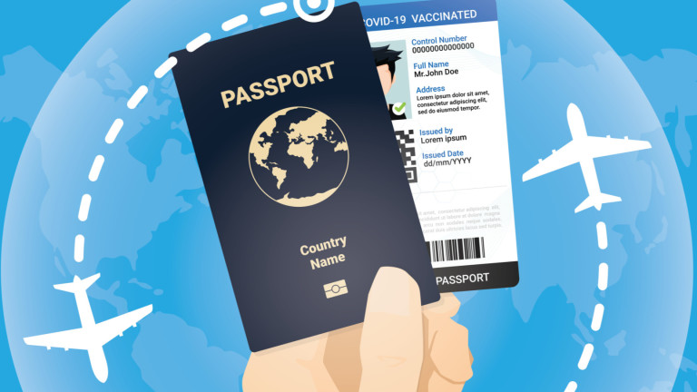

Съгласно чл.33, ал. 1 от Закона за българските лични документи (ЗБЛД), „всеки български гражданин има право да напуска страната и да се завръща в нея с паспорт, заместващ го документ или военна карта за самоличност през определените за това места“, като (ал. 3) „правото по ал. 1 не подлежи на ограничения, освен ако те са предвидени със закон и са необходими за защитата на националната сигурност, обществения ред, здравето на гражданите или на правата и свободите на други граждани“. Според чл.34, ал. 1 от ЗБЛД „паспортът е документ за преминаване на държавната граница на Република България и за пребиваване извън страната“, а съгласно чл. 35, ал.1 „Всеки гражданин на Република България има право само на един паспорт по чл. 38, т. 3“. При подаване на заявлението се събират биометрични данни и дължимите държавни такси.
Паспортите на българските граждани се издават със срок на валидност 5 години.
| В случаите, когато паспортът е повреден, унищожен, изгубен, откраднат или страниците му са изчерпани, се издава нов паспорт |
| По искане на лицето нов паспорт може да се издаде и преди изчерпване на неговата валидност. |
| При промяна на имената, единния граждански номер, пола, гражданството или при настъпили съществени и трайни изменения на образа лицето е длъжно да подаде заявление за издаване на нови български лични документи в срок до 30 дни. |
| При заявяване на нов паспорт вследствие промяна на имената след сключен граждански брак следва да бъде представено и българско удостоверение за сключен граждански брак в оригинал и фотокопие. В този случай задължително следва да се подаде заявление и за издаване на нова лична карта. |